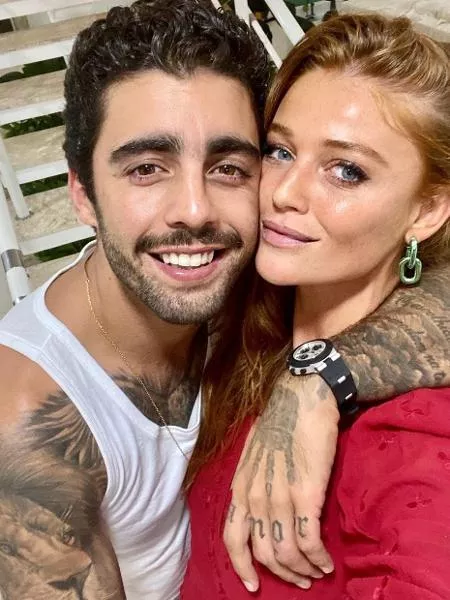
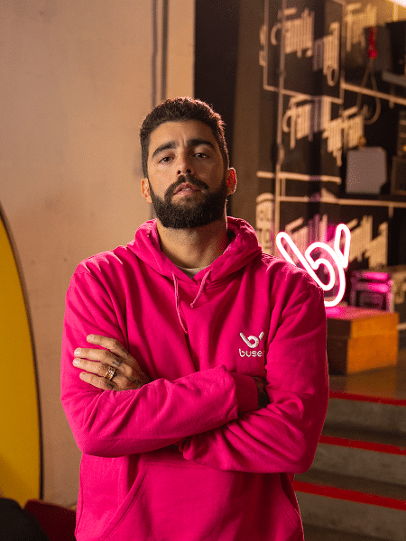

minha carreira
Comecei a minha carreira no surfe muito jovem. Tinha apenas 6 anos quando peguei pela primeira vez numa prancha, mas foi aos 13 anos que comecei a competir de verdade. Com 16 anos, já estava em campeonatos profissionais e, aos poucos, fui me destacando no cenário nacional e internacional. O surfe sempre foi a minha paixão, e eu sabia que queria viver disso desde criança.

familia
Eu construí uma família bem pública e cheia de momentos marcantes, tanto na minha vida pessoal quanto nas redes sociais. Fui casado com a atriz Luana Piovani, com quem tenho três filhos: Dom, Bem e Liz. Nosso casamento teve altos e baixos, e acabou em 2019, mas, apesar da separação, mantenho uma relação de respeito com ela, principalmente por causa dos nossos filhos. Costumamos compartilhar momentos em família nas redes sociais, e eu sempre tento mostrar que sou um pai presente e dedicado. Depois da separação, me envolvi com outras figuras públicas. Um dos relacionamentos que mais chamou atenção foi com a cantora Anitta, mas também tive um namoro com a modelo Cíntia Dicker, com quem tenho demonstrado muita cumplicidade nas redes sociais. Minha família é muito focada nos filhos, e eu sempre falo sobre a importância de ser um bom pai. Mesmo com minha agenda cheia por conta das competições e eventos públicos, faço questão de dividir momentos com meus filhos, seja nas praias, praticando surfe, ou em viagens. Tenho uma relação de proximidade com eles, buscando ser um exemplo de equilíbrio entre minha carreira e a vida familiar. Apesar de ser conhecido, meu foco é criar uma base sólida para meus filhos e manter nosso vínculo forte.
BBB
Participar do BBB foi uma experiência única na minha vida. Eu nunca tinha passado por algo assim antes, então foi um desafio enorme, mas também uma oportunidade de me conhecer melhor e mostrar quem eu sou de verdade. Durante o programa, enfrentei momentos de muita emoção, de alegria e também de dificuldades. Foi intenso conviver com pessoas diferentes, dividir minhas opiniões e aprender a lidar com as situações sob os olhos de milhões de telespectadores. O mais importante pra mim foi manter minha autenticidade, ser verdadeiro e mostrar que, além de surfista, sou uma pessoa que valoriza a família, o respeito e a honestidade. Saí do BBB com uma experiência que me ensinou muito sobre mim mesmo, sobre o que realmente importa na vida, e com uma nova perspectiva sobre os desafios e as conquistas. Foi uma jornada que vou guardar pra sempre na memória!